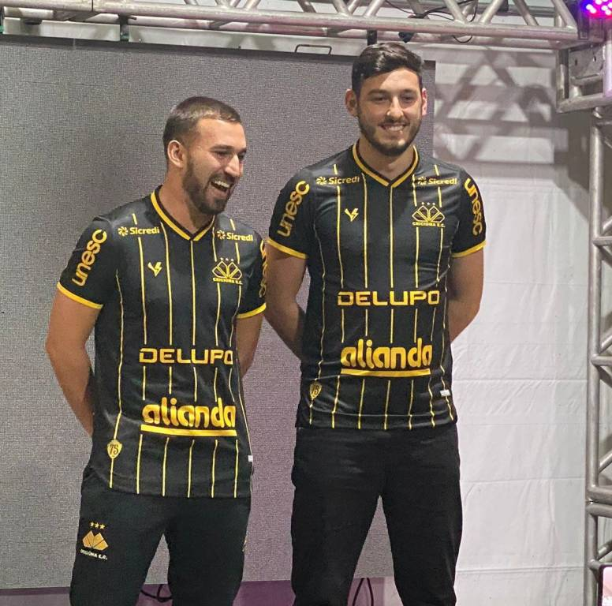

O Criciúma Esporte Clube completou 75 anos nesta sexta-feira (15/05). Em comemoração a importante data, o clube preparou uma série de eventos no pátio do estádio Heriberto Hülse. O início das festividades contou com atrações musicais e encerrou o tradicional corte do bolo. Convidados especiais e a torcida carvoeira estiveram presentes e aplaudiram os homenageados da noite.
Técnicos que passaram pela grandiosa história do Tigre receberam carteirinhas especiais franqueadas pelo Criciúma para assistir os jogos no Heriberto Hülse com acesso às cadeiras. Ex-presidentes também foram homenageados com medalhas comemorativas dos 75 anos, e em memória, as famílias representaram os ex-mandatários. O senhor Salvio Aguiar, último personagem vivo da fundação do clube, foi presenteado com uma das medalhas.
“Foi uma noite marcante e muito especial. Foi ótimo receber e relembrar os nossos eternos ídolos e ex-técnicos que ajudaram a construir essa história de tantas glórias. Com certeza esse evento ficará guardando na memória de todo torcedor”, exaltou o presidente do clube, Anselmo Freitas.
A data também marcou o lançamento da camisa comemorativa aos 75 anos do Criciúma. Produzida pela Volt e com quantidade limitada, ela foi apresentada através de um vídeo no telão do evento, com a pré-venda na Loja Tigre Maníacos. Uma cerveja comemorativa e limitada foi lançada nas redes sociais do Tigre e o público presente pôde adquiri-la no Tigre Sport Bar juntamente com um copo especial da data comemorativa.
MAIS AÇÕES AGENDADAS PARA A SEMANA SEGUINTE
Na semana seguinte das comemorações, no domingo (22/05), o Pedal do Tigre irá movimentar a cidade. O evento ciclístico ocorre em parceria com o 28º GAC, da Polícia Militar, DTT (Diretoria de Trânsito e Transporte), Instituto Jhon Bike e a assistência logística da Equipe Multi Institucional.
A saída ocorre a partir das 10 horas no pátio do estádio Heriberto Hülse e os participantes irão até o Parque das Nações com ida e volta pela Avenida Centenário e retornarão ao Majestoso. Haverá sorteio de camisas oficiais do Tigre e premiações individuais e por equipe serão dadas aos ciclistas.
No mesmo dia do Pedal do Tigre, mais homenagens serão prestadas no estádio Heriberto Hülse. “Mais ações estão sendo planejadas para homenagear personagens importantes da nossa história. Além de uma torcida apaixonada, o Criciúma possui pessoas que ajudaram a construir o presente vitorioso”, destacou a gerente comercial e de marketing do clube, Viviani Olimpio.